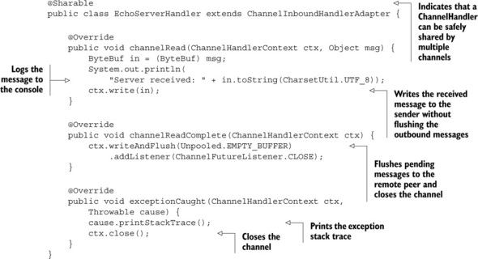
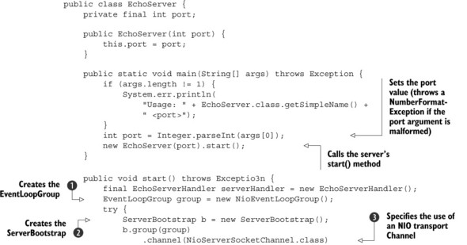
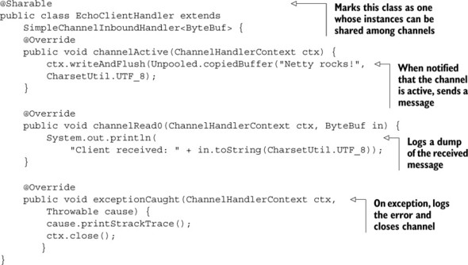

本章包含： - 设置开发环境 - 一个Echo服务和客户端 - 构建和测试应用
2.1 设置开发环境
下载安装JDK和MAVEN，设置JAVA_HOME，并且设置M2_HOME
2.2 Netty的客户端和服务器概览
下图是我们的Echo服务器和客户端一览。虽然我们大部分是在写web应用，但实现服务器和客户端有助于更好的理解Netty API.

2.3 编写Echo服务器
所有的Netty Server都需要：
- 至少一个ChannelHandler:这个组建实现了服务端用于处理客户端提交的数据，它是业务逻辑。
- Bootstrapping:用来配置服务的启动代码。最少的启动代码是绑定端口。
2.3.1 ChannelHandler和业务逻辑
在上一篇中，我们介绍了Future和回调，并且介绍了他们用于事件驱动设计。我们也讨论了ChannelHandler，用于接收和响应事件通知。在Netty应用中，所有的数据处理逻辑都是包含在这个核心概念里面的。
因为Echo服务用于响应进来的消息，它需要实现interface ChannelInboundHandler，它定义了用于响应inbound事件的方法。这个简单的应用只包含几个方法，所以从ChannelInboundHandlerAdapter继承就可以了，它是ChannelInboundHandler的一个默认实现。
下面的几个方法对我们很有用：
- channelRead()：每个incoming消息都会调用
- channelReadComplete(): 本批消息中最后一个channelRead()被调用时通知
- exceptionCaught():读操作发生异常时会调用。
Echo服务的ChannelHandler实现是EchoServerHandler，如下：

@ChannelHandler.Sharable
public class EchoServerHandler extends ChannelInboundHandlerAdapter {
Logger logger = LoggerFactory.getLogger(EchoServerHandler.class);
@Override
public void channelRead(ChannelHandlerContext ctx, Object msg) throws Exception {
ByteBuf in = (ByteBuf) msg;
logger.info("Server received: {}", in.toString(CharsetUtil.UTF_8));
ctx.write(in);
}
@Override
public void channelReadComplete(ChannelHandlerContext ctx) throws Exception {
//flush pending messages to the remote peer and closes the channel
ctx.writeAndFlush(Unpooled.EMPTY_BUFFER)
.addListener(ChannelFutureListener.CLOSE);
}
@Override
public void exceptionCaught(ChannelHandlerContext ctx, Throwable cause) throws Exception {
logger.error("Error: {}, {}", cause.getMessage(), cause.getStackTrace());
//关闭channel
ctx.close();
}
}
ChannelInboundHandlerAdapter有很只管的API，每个方法都可以被重写。因为你要接受数据，因此需要重写channelRead()。
重写exceptionCaought()允许你对任何Throwable子类型做出响应。
每个Channel都有一个ChannelPipeline关联，后者有一个ChannelHandler实例链。他们一个挨一个的调用。因此如果没有exceptionCaught()实现，就回一直传递到ChannelPipeline结束，并且被日志记录。因此，在应用中至少有一个ChannelHandler提供exceptionCaught()。
除了ChannelInboundHandlerAdapter之外，还有很多其他ChannelHandler子类型。现在只需要知道：
- ChannelHandler被不同事件类型调用
- 应用实现或扩展ChannelHandler以便在时间不同生命周期挂载并且提供自定义应用逻辑
- 架构上，ChannelHandler帮助我们将业务逻辑从网络代码中解耦。
2.3.2 Bootstrapping服务
在实现了业务逻辑EchoServerHandler之后，现在要启动服务，这包含：
- 绑定端口用来监听请求
- 配置
Channel用来将inbound消息到通知EchoServerHandler实例
传输 传输层是用来提供端到端的通信服务。Internet通信是基于TCP传输的。
NIO传输几乎与TCP等同，只是它使用Java NIO对服务端性能进行了增强。
下面是EchoServer类的代码

public class EchoServer {
private static final Logger logger = LoggerFactory.getLogger(EchoServer.class);
public final int port;
public EchoServer(int port){
this.port = port;
}
public static void main(String[] args) throws Exception {
if (args.length != 1) {
logger.error("Usage: {} <port>", EchoServer.class.getSimpleName());
return;
}
int port = Integer.parseInt(args[0]);
new EchoServer(port).start();
}
public void start()throws Exception {
final EchoServerHandler serverHandler = new EchoServerHandler();
//1. 创建事件循环组
EventLoopGroup group = new NioEventLoopGroup();
try {
//2. 创建ServerBootstrap
ServerBootstrap b = new ServerBootstrap();
b.group(group)
//3. 指定使用NIO传输Channel
.channel(NioServerSocketChannel.class)
//4.指定socket端口
.localAddress(new InetSocketAddress(port))
//5. 添加EchoServerHandler到ChannelPipeline
.childHandler(new ChannelInitializer<SocketChannel>() {
@Override
protected void initChannel(SocketChannel socketChannel) throws Exception {
//因为EchoServerHandler是@Sharable的,所以我们一直可以使用同一个
socketChannel.pipeline().addLast(serverHandler);
}
});
//6. 异步绑定,使用sync()等待绑定完成
ChannelFuture f = b.bind().sync();
//7. 获取Chaneel的CloseFuture,阻塞当前线程,知道其完成
f.channel().closeFuture().sync();
} finally {
//8. 关闭EventLoopGroup,释放所有资源
group.shutdownGracefully().sync();
}
}
}
@2中创建了ServerBootstrap实例。因为使用的是NIO传输，所以指定NioEventLoopGroup @1来接受和处理新的连接，并且使用NioServerSocketChannel@3作为channel类型。之后，设置本地地址和端口给InnetSocketAddress@4. 服务会丙丁到这个地址监听新的连接请求。
在@5中，创建了一个特殊的类ChannelInitializer，这是关键。当接收一个新连接时，一个新的Channel子类型会被创建，ChannelInitializer会添加一个DchoServerHandler的实例到Channel的ChannelPipeline中。
虽然NIO可扩展，但对它的恰当配置，尤其是多线程配置，却不容易。Netty封装了这些复杂性。
然后我们绑定服务@6， 登台绑定完成（sync()调用一起当前Thread阻塞直到完成）。在@7中，应用汇等待，直到服务的Channel关闭（因为调用了Channel的CloseFuture的sync()）。然后可以关闭EventLoopGroup并且释放资源（包括所创建的线程）@8
这里使用NIO时因为它是目前应用最广泛的传输，得益于它的扩展性和异步性。但是也可以使用别的传输实现。如果你想在服务端使用OIO传输，那就指定OioServerSocketChannel和OioEventLoopGroup。
同时，我们回顾一下服务端实现的重要步骤。下面的是服务端的基础代码。
EchoServerHandler实现业务逻辑main()方法启动服务
启动服务的步骤：
- 创建
ServerBootstrap实例 - 创建
NioEventLoopGroup实例用来处理事件，比如接收新连接，并且读写数据 - 指定本地
InetSocketAddress用来做服务绑定 - 为每一个
Channel使用EchoServerHandler实例初始化 - 调用
ServerBootstrap.bind()绑定到服务。
至此，服务被初始化并且处于可用状态了。下一节我们实现客户端应用。
2.4 实现Echo客户端
Echo客户端将：
- 连接服务
- 发送一个或多个消息
- 对于每个消息，等待并接受服务器返回
- 关闭连接
服务端同样需要两步：业务逻辑和bootstrap
2.4.1 使用ChannelHandler实现客户端逻辑
客户端也使用ChannelInboundHandler来处理数据。这个例子中，我们扩展类SimpleChannelInboundHandler来处理所有的任务。这需要重写以下的方法：
channelActive()：与服务的链接建立后调用channelRead0(): 从服务端读取到消息后调用exceptionCaught(): 如果发生异常时调用

@ChannelHandler.Sharable
public class EchoClientHandler extends SimpleChannelInboundHandler<ByteBuf> {
private static final Logger logger = LoggerFactory.getLogger(EchoClientHandler.class);
@Override
public void channelActive(ChannelHandlerContext ctx) throws Exception {
//当链接建立时调用,发送消息
ctx.writeAndFlush(Unpooled.copiedBuffer("Netty rocks!", CharsetUtil.UTF_8));
}
protected void channelRead0(ChannelHandlerContext ctx, ByteBuf msg) throws Exception {
//记录收到的消息
logger.info("Client received: {}", msg.toString(CharsetUtil.UTF_8));
}
@Override
public void exceptionCaught(ChannelHandlerContext ctx, Throwable cause) throws Exception {
logger.error("Error: {}, {}", cause.getMessage(), cause.getStackTrace());
ctx.close();
}
}
当有数据从服务端返回时调用channelRead0()。注意服务端返回的数据可能是分块的。也就是说，如果服务器返回5个字节，并不能保证5各字节一次性杯接收。及时如此小的数据，channelRead0()也有可能被调用两次，第一次用ByteBuf（Netty的byte容器）保存3个字节，第二个用ByteBuf保存2个字节。作为一个流协议，TCP保证每个字节按顺序接收。
SimpleChannelInboundHandler vs ChannelInboundHandler
在客户端，当channelRead0()完成，你就有了incoming消息。当方法返回时，SimpleChannelInboundHandler负责释放ByteBuf的内存。
在服务端，你也要响应incoming消息，然后使用write()（它是异步的），但当channelRead()返回时操作还可能没完成。因此，EchoServerHandler继承ChannelInboundHandlerAdapter，它不负责释放消息。消息由EchoServerHandler的channelReadComplet()中writeAndFlush()释放。
2.4.2 启动客户端

public class EchoClient {
private static final Logger logger = LoggerFactory.getLogger(EchoClient.class);
private final String host;
private final int port;
public EchoClient(String host, int port) {
this.host = host;
this.port = port;
}
public void start() throws Exception {
EventLoopGroup group = new NioEventLoopGroup();
try {
Bootstrap b = new Bootstrap();
b.group(group)
.channel(NioSocketChannel.class)
.remoteAddress(new InetSocketAddress(host, port))
.handler(new ChannelInitializer<SocketChannel>() {
protected void initChannel(SocketChannel ch) throws Exception {
ch.pipeline().addLast(new EchoClientHandler());
}
});
ChannelFuture f = b.connect().sync();
f.channel().closeFuture().sync();
} finally {
group.shutdownGracefully().sync();
}
}
public static void main(String[] args) throws Exception {
if (args.length != 2) {
logger.error("Usage: {} <host> <port>", EchoClient.class.getSimpleName());
return;
}
String host = args[0];
int port = Integer.parseInt(args[1]);
new EchoClient(host, port).start();
}
}
2.5 启动运行Server/Client
2.5.1 构建
mvn clean package
2.5.2 运行Echo Server和Client
你可以直接使用Java命令行直接运行，也可以在pom中使用exec-maven-plugin插件来配置。
打开两个窗口，分别切换到server和client对应的目录，然后运行:
mvn exec:java
源码：https://github.com/liulixiang1988/javademo/tree/master/netty/EchoNetty